BeatConfused Studio
eTuttino Pocket · manual de montagem
← Voltar à página do eTuttino Pocket
O eTuttino Pocket é um acordeão cromático eletrônico de botões: 28 botões em C-griff (G3 a E5), teclas magnéticas sensíveis ao toque, alto-falante, saída de fone e bateria própria. Este manual vai das peças compradas até os primeiros testes, numa rota só: a placa principal chega montada da JLCPCB, e o que se solda em casa está marcado em cada passo.

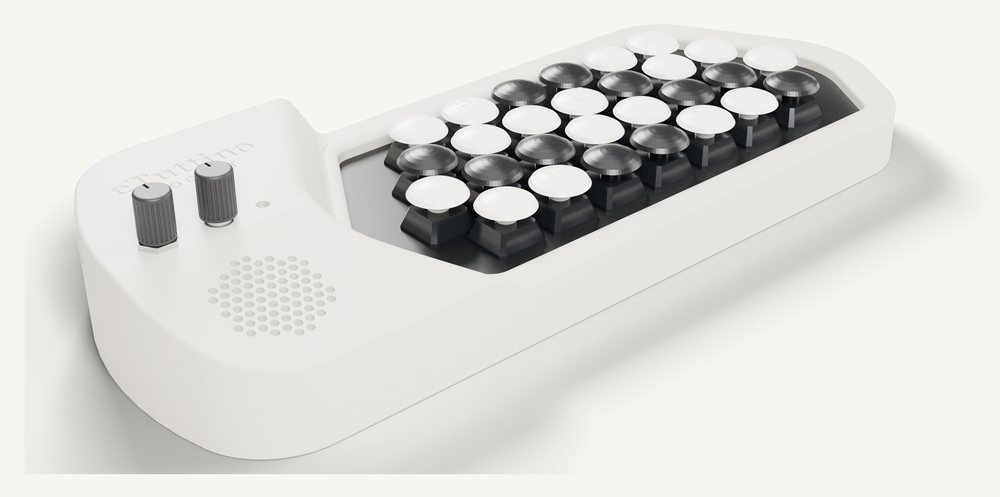
O projeto físico está fechado: case, placas, peças e cabos. Nenhum Pocket foi montado ainda. Trate o primeiro como protótipo: confira cada medida marcada (conferir) com a peça real antes de seguir. A firmware do Pocket vem depois; o passo 9 testa a parte elétrica sem ela.
Passo 1
Antes de começar
Como o Pocket é por dentro
Embaixo, o fundo (1) segura a placa principal (3) sobre pilares e guarda a bateria (27) num berço com tampinha (29). Na placa ficam os 28 switches magnéticos (5) com o plate (4) e a pilha Teensy 4.0 (7) + Audio Board (8). Na casca de cima (2) ficam presas três plaquinhas: a dos knobs (10, encoder e LED), a do volume (11, em pé, com o potenciômetro com chave) e a do painel (16, USB-C e fone), além do alto-falante (24) na caixa fechada sob a grade.

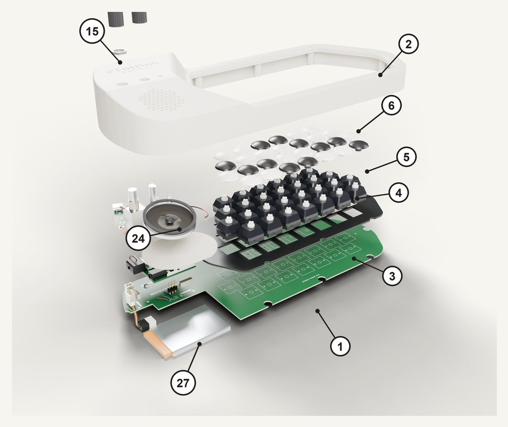

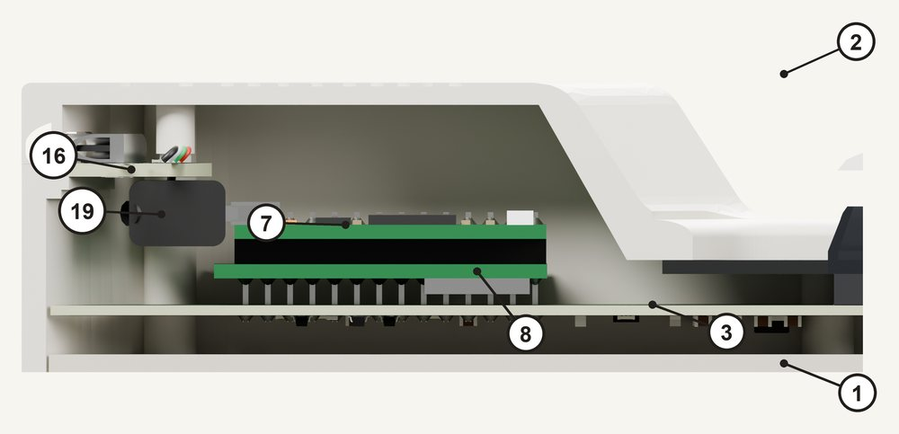

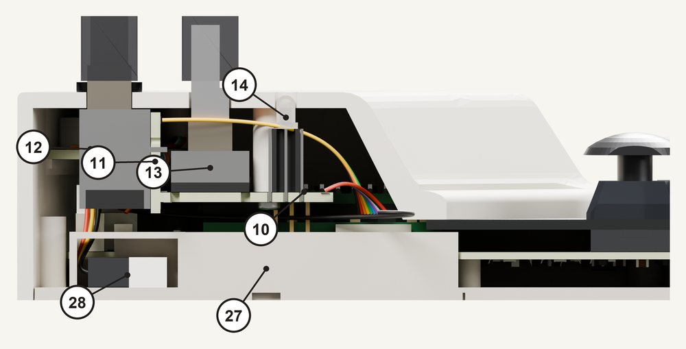

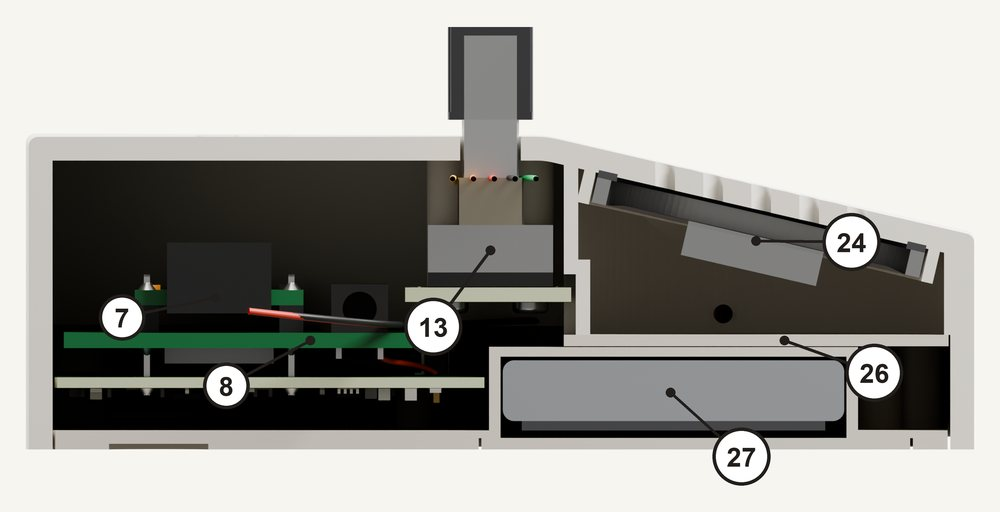
Lista de peças (os números das figuras)
| # | Peça | # | Peça |
|---|---|---|---|
| 1 | fundo (case, MJF) | 20 | cabo do painel JST SH 8 vias / conector J_PNL |
| 2 | casca de cima (case, resina) | 21 | cabo dos knobs JST SH 10 vias / conector J_CTL |
| 3 | placa principal (montada pela JLCPCB) | 22 | conector da bateria J_BAT (JST PH 3) |
| 4 | plate dos switches (FR-4) | 23 | conector do alto-falante J_SPK (JST PH 2) |
| 5 | switch magnético Gateron KS-20 (×28) | 24 | alto-falante CLS0361-L152 |
| 6 | capa do botão (×28) | 25 | junta de espuma do alto-falante |
| 7 | Teensy 4.0 | 26 | fundo da caixa do alto-falante (MJF) |
| 8 | Audio Board Rev D | 27 | bateria LiPo 603450 com NTC (+ espuma) |
| 9 | barra de pinos 1×14 extralonga (×2) | 28 | rabicho da bateria e o par JST no bolso |
| 10 | plaquinha dos knobs | 29 | tampinha da bateria (MJF) |
| 11 | plaquinha do volume (em pé) | 30 | espuma da bateria |
| 12 | potenciômetro de volume com chave (RK097) | 31 | fios do fone (Audio Board → pads J_HP) |
| 13 | encoder EC11E | 32 | parafuso M2,5 × 8 escareado, autoatarraxante (×10) |
| 14 | LED 3 mm bicolor + espaçador | 33 | parafuso M2 × 10 + porca M2 (×2) |
| 15 | knob (×2) | 34 | parafuso M2 × 5 autoatarraxante (×2) |
| 16 | plaquinha do painel (montada pela JLCPCB) | 35 | parafuso M2 × 6 autoatarraxante (×1) |
| 17 | receptáculo USB-C (já soldado) | 36 | parafuso M2 × 6 escareado (×2) |
| 18 | jack de fone SJ1-3525N | 37 | porca M7 (vem com o potenciômetro) |
| 19 | cabo micro-B de 90° | 38 | calço de 3 mm (só durante a solda) |
As letras A a H nas figuras do passo 9 são pontos de teste, e H1/H2 os dois furos da plaquinha do painel.
O que comprar (kit)
A lista completa, com quantidades por Pocket, quanto comprar (com sobra das peças pequenas), fornecedor, código e link, também em pocket_kit_bom.csv. As linhas conferir ainda têm o código exato ou uma medida a confirmar.
| Grupo | Item | Por Pocket | Comprar | Onde / código | Obs. |
|---|---|---|---|---|---|
| Placas | Placa principal montada (verso: CIs, passivos, 28 TMAG5253; topo: J_PNL, J_CTL) 4 camadas, 1,2 mm, Gerbers fab/pocket_gerbers.zip + BOM fab/pocket_bom.csv + CPL fab/pocket_cpl_bottom.csv / _top.csv | 1 | 5 placas / 2 montadas | JLCPCB (PCBA) | TMAG5253BA3IQDMRR fora do estoque da JLCPCB: consignar (linha abaixo) ou 'global sourcing' |
| Placas | Sensor Hall para a placa principal (consignado na JLCPCB) TI TMAG5253BA3IQDMRR, X2SON-4 conferir | 28 | 40 | TI store / DigiKey / Mouser · 296-TMAG5253BA3IQDMRRCT-ND (DigiKey, conferir) | 28 + perdas de montagem (a JLCPCB pede ~5-10 % a mais); 2 placas montadas = 56 + 6 |
| Placas | Plaquinha do painel montada (topo: USB-C, 2 x 5,1 k, ESD) 2 camadas, 1,6 mm, fab/pocket_panel_gerbers.zip + fab/pocket_panel_bom.csv + fab/pocket_panel_cpl_top.csv | 1 | 5 placas / 2 montadas | JLCPCB (PCBA) · C165948, C25905, C2827688 | o jack de fone é soldado em casa |
| Placas | Plaquinha dos knobs (sem montagem) 2 camadas, 1,6 mm, fab/pocket_controls_gerbers.zip | 1 | 5 | JLCPCB | pedido mínimo de 5 |
| Placas | Plaquinha do volume, em pé (sem montagem) 2 camadas, 1,6 mm, fab/pocket_pot_gerbers.zip | 1 | 5 | JLCPCB | pedido mínimo de 5 |
| Placas | Plate dos switches FR-4 1,6 mm, desenho do design (case/out/plate.dxf) conferir | 1 | 5 | JLCPCB (como placa sem cobre) | arquivo do design |
| Teensy | Teensy 4.0 PJRC TEENSY40 (sem pinos) | 1 | 1 | PJRC / distribuidor · TEENSY40 | cortar a ponte VUSB-VIN antes de soldar |
| Teensy | Audio Board Rev D PJRC TEENSY4_AUDIO | 1 | 1 | PJRC / distribuidor · TEENSY4_AUDIO | |
| Teensy | Barra de pinos extralonga 1 x 14, passo 2,54 (pilha baixa) header macho 1x14, pino ~20 mm (plástico ~2,5) conferir | 2 | 4 | PJRC / AliExpress / Mouser · conferir | as pernas atravessam a Audio Board e a placa principal: medir antes |
| Teclado | Switch magnético Gateron (Hall) KS-20 Gateron Magnetic Jade (ou equivalente KS-20 com ímã) conferir | 28 | 32 | Gateron / lojas de teclado · conferir | ímã com o norte para baixo (sensor no verso) |
| Teclado | Capas dos botões impressas (arquivos do design, case/out) conferir | 28 | 32 | impressão 3D | imprimir 4 de teste primeiro |
| Controles | Potenciômetro de volume com chave Alps RK0971221Z05 (RK097, 10 k, chave SPST, horizontal) conferir | 1 | 2 | LCSC · C336003 | curva e comprimento do eixo a conferir; vem com porca M7 |
| Controles | Encoder com clique Alps EC11E 15 pulsos / 15 detentes, com chave, eixo D 20 mm (família EC11E1520xxx) conferir | 1 | 2 | Mouser / TME / Farnell · conferir sufixo | |
| Controles | LED 3 mm bicolor vermelho/verde, catodo comum Kingbright WP937EGW conferir | 1 | 3 | DigiKey / Mouser · 754-1234-ND (conferir) | |
| Controles | Espaçador do LED 3 mm, ~10 mm espaçador de nylon para LED 3 mm conferir | 1 | 3 | AliExpress / Mouser · conferir | ou tubo de luz |
| Controles | Knobs para eixo serrilhado D6 knob ~D10-12, furo D6 serrilhado (18 dentes) conferir | 2 | 3 | AliExpress / Mouser · conferir | ou impresso pelo design |
| Painel | Jack de fone 3,5 com comutação na ponta Same Sky SJ1-3525N | 1 | 2 | DigiKey / Mouser · CP1-3525N-ND | manga no terra virtual (HP_VGND), nunca no GND |
| Painel | Cabo micro-B 90 graus curto cabo USB micro-B macho 90 graus (para cortar), ~10-20 cm conferir | 1 | 2 | AliExpress / Amazon · conferir | sentido do ângulo conforme a pilha (design: stack.usb_plug) |
| Cabos | Conector da bateria na placa JST B3B-PH-K-S | 1 | 2 | LCSC · C131339 | soldar em casa (passante) |
| Cabos | Conector do alto-falante na placa JST B2B-PH-K-S conferir | 1 | 2 | LCSC · C131337 | soldar em casa (passante) |
| Cabos | Rabicho da bateria cabo de extensão JST PH 2,0 3 vias macho-fêmea, 100 mm (cortar para ~70) conferir | 1 | 2 | AliExpress / Adafruit · conferir | ligação 1:1; conferir a polaridade com o multímetro |
| Cabos | Plugue do alto-falante cabo JST PH 2,0 2 vias com fios, 100 mm (fêmea PHR-2) conferir | 1 | 2 | AliExpress / LCSC · conferir | ou PHR-2 + 2 terminais SPH crimpados |
| Cabos | Cabo do painel cabo JST SH 1,0 8 vias, 100 mm, com conector numa ponta (fios soltos na outra) conferir | 1 | 2 | AliExpress / LCSC · conferir | ou com conector nas duas pontas, cortar uma |
| Cabos | Cabo dos knobs cabo JST SH 1,0 10 vias, 100 mm, com conector numa ponta conferir | 1 | 2 | AliExpress / LCSC · conferir | |
| Cabos | Fio fino de silicone 28-30 AWG, 2 cores, 1 m | 1 | 1 | qualquer | fios do fone (Audio Board -> J_HP) |
| Cabos | Termorretrátil fino D1,5 e D3 | 1 | 1 | qualquer | |
| Energia e som | Bateria LiPo 1S 1000-1200 mAh, PCM, NTC 10 k (3 fios), JST PH 3 tipo 603450 (EEMB LP603450 com NTC, ou 603450 3 fios pronta) conferir | 1 | 1 | EEMB / eBay / Core Electronics · CE06795 (reserva) | célula <= 7 x 36 x 58 com PCM; nunca furar, dobrar ou carregar sem o NTC |
| Energia e som | Alto-falante 36 mm 8 ohm 2 W Same Sky CLS0361-L152 | 1 | 1 | Mouser / DigiKey / TME · CLS0361-L152 | |
| Energia e som | Junta de espuma do alto-falante espuma adesiva 0,8 mm, anel D36/D30 conferir | 1 | 2 | qualquer | medida do design |
| Energia e som | Espuma da bateria espuma EVA/PU 1-2 mm, 36 x 58 conferir | 1 | 2 | qualquer | sem cola na célula |
| Fixação | Parafuso do fundo M2,5 x 8 autoatarraxante para plástico, cabeça escareada (ou inserto a quente M2,5) conferir | 10 | 12 | qualquer | conferir comprimento com o design |
| Fixação | Parafuso + porca da placa principal M2 x 10 cabeça panela + porca M2 conferir | 2 | 4 | qualquer | de baixo para cima, porca em cima da placa |
| Fixação | Parafuso da plaquinha dos knobs M2 x 5 autoatarraxante para plástico conferir | 2 | 4 | qualquer | |
| Fixação | Parafuso da plaquinha do painel (furo H2) M2 x 6 autoatarraxante para plástico conferir | 1 | 3 | qualquer | o H1 é só um pino do poste |
| Fixação | Parafuso da tampinha da bateria M2 x 5 cabeça escareada, autoatarraxante conferir | 2 | 4 | qualquer | |
| Impressos | Casca de cima (tampa) resina (case/out/seixo_tampa.stl) conferir | 1 | 1 | JLC3DP / PCBWay / Craftcloud | arquivos e materiais do design |
| Impressos | Fundo, tampinha da bateria, fundo da caixa do alto-falante MJF (case/out) conferir | 1 | 1 | JLC3DP / PCBWay / Craftcloud | arquivos e materiais do design |
| Consumíveis | Fita Kapton 10 mm | 1 | 1 | qualquer | isolar o fundo do Teensy e o PCM da bateria |
| Consumíveis | Cola para vedar a caixa do alto-falante silicone neutro ou cola E6000 | 1 | 1 | qualquer |
O que já vem montado e o que se solda em casa
| Peça | Quem solda |
|---|---|
| Placa principal: CIs, passivos e os 28 sensores TMAG5253 no verso; J_PNL e J_CTL em cima | JLCPCB (os sensores X2SON de 1,1 × 1,4 mm não se soldam em casa) |
| Plaquinha do painel: USB-C, 2 resistores de 5,1 kΩ, protetor ESD | JLCPCB |
| Pilha Teensy + Audio Board e a pilha na placa principal | em casa (passos 3 e 4) |
| J_BAT e J_SPK (JST PH passantes), fios do fone | em casa (passo 4) |
| Potenciômetro, encoder, LED, junta de 90°, jack de fone, cabos das plaquinhas, cabo micro-B | em casa (passo 6) |
| Placa dos knobs, do volume e o plate | sem peças SMD (só a placa nua) |
Arquivos das placas: principal (com BOM, CPL do verso e CPL de cima), painel (com BOM e CPL), knobs e volume. O plate dos switches é plate.dxf, feito como placa de FR-4 de 1,6 mm sem cobre.
O que imprimir
| Arquivo (STL / STEP) | Material | Qtd |
|---|---|---|
| seixo_tampa · STEP: casca de cima, com o logo de 0,4 mm | resina (SLA/DLP, de engenharia, tipo Tough ou Grey) | 1 |
| seixo_fundo · STEP: fundo com os pilares e o berço | MJF PA12 | 1 |
| seixo_tampa_bateria · STEP: tampinha da bateria | MJF PA12 | 1 |
| seixo_caixa_fundo · STEP: fundo da caixa do alto-falante | MJF PA12 | 1 |
| keycap_test_4: 4 capas de teste (passo 2) | resina | 1 |
| keycap_natural: naturais | resina branca | 12 |
| keycap_sharp: sustenidos | resina preta | 11 |
| keycap_cf: Dós e Fás, com o xadrez diagonal | resina branca | 5 |
Serviços que imprimem resina e MJF a partir de STL: JLC3DP, PCBWay, Craftcloud. No MJF, peça os furos-piloto M2 abertos para Ø 1,8.
Ferramentas
- Ferro de solda de ponta fina (cônica de 0,5–1 mm ou chanfrada de 1,5 mm), 330–350 °C; estanho de 0,5–0,8 mm com fluxo; fluxo em pasta ou caneta; malha dessoldadora.
- Pinça, alicate de corte rente, estilete afiado, lupa.
- Multímetro com tensão contínua, resistência e continuidade (bipe).
- Fita Kapton, termorretrátil fino, fio de silicone 28–30 AWG.
- Chave Phillips pequena (M2 e M2,5), chave de boca ou alicate para a porca M7.
- Cola para vedar (a caixa do alto-falante e o furo dos fios).
- Cabo USB-C e um carregador USB comum.
Bateria de lítio (LiPo): leia antes
- Não furar, não dobrar, não amassar, não aquecer. Nada de ferro de solda perto da célula.
- Não carregar sem o NTC ligado (o fio do meio): sem ele o carregador não sabe a temperatura. A placa só carrega com o NTC entre 0 e 45–50 °C.
- Conferir a polaridade do plugue antes de ligar (passo 7): a ordem dos fios muda entre vendedores. Invertida, queima o carregador e pode aquecer a bateria.
- Os fios + e − nunca podem se tocar; isole com fita a ponta de qualquer fio cortado.
- Bateria estufada, amassada, quente ou com cheiro doce: não usar; descartar num ponto de coleta.
- Nas primeiras cargas, carregue sobre uma superfície não inflamável e por perto.
Passos 2 a 5
Capas, Teensy, placa principal e switches
2. Capas de teste
As capas encaixam na cruz MX do switch, mas cada impressora erra alguns décimos. Antes das 28, imprima o keycap_test_4.stl: quatro capas num canal, como quatro botões vizinhos.

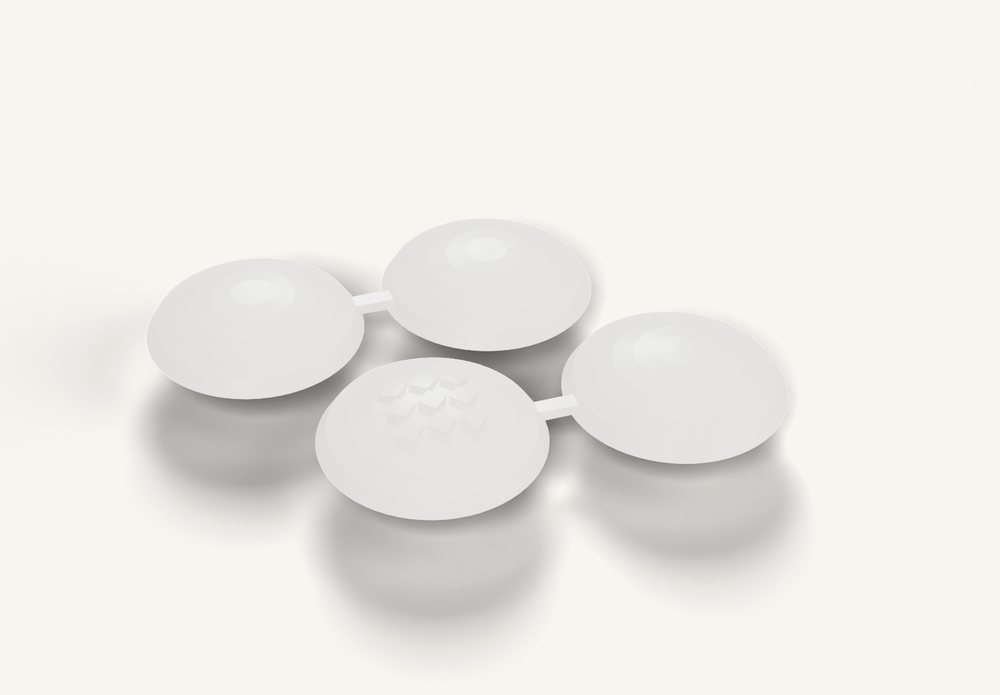
- Encaixe quatro switches vizinhos no plate e corte as capas do canal.
- Cada capa entra firme e não balança; tire e ponha algumas vezes.
- Aperte cada tecla até o fundo: as saias não se tocam e as teclas voltam.
- Folgada ou apertada: avise o serviço de impressão (ou ajuste
CROSSemetutti/hardware/case/keycap.py) e repita o teste. Depois imprima as 28.
3. Teensy: cortar a ponte VUSB–VIN e soldar a pilha baixa
Corte a ponte antes de tudo. Depois de soldado na Audio Board, o verso do Teensy fica inacessível. No Pocket o Teensy recebe 3,3 V do conversor da placa; com a ponte inteira, a USB e o conversor brigam no mesmo trilho.

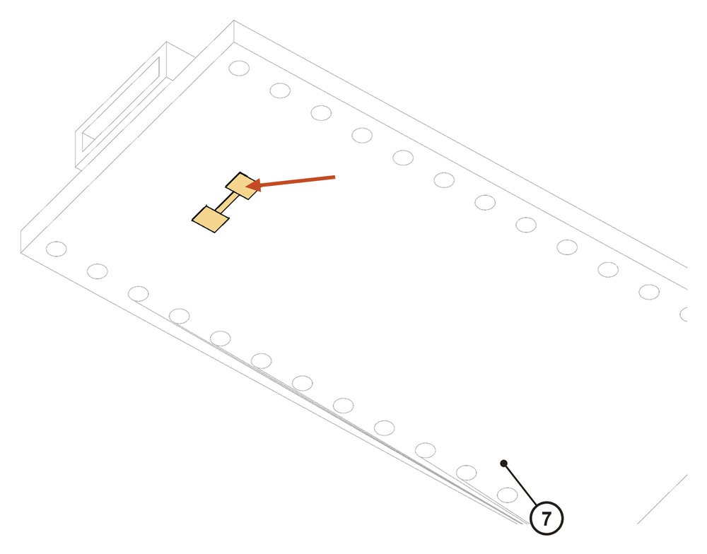
- em casa Passe o estilete 3 a 4 vezes, firme, na trilha entre os pads VUSB e VIN, até ver a fibra da placa entre eles.
- Teste: multímetro em continuidade entre o pino VIN (na borda, ao lado do GND) e o pad VUSB: sem bipe. Se bipar, corte de novo.
- Cubra o verso do Teensy com uma camada de fita Kapton: ele fica de frente para a Audio Board, ~2,5 mm acima.

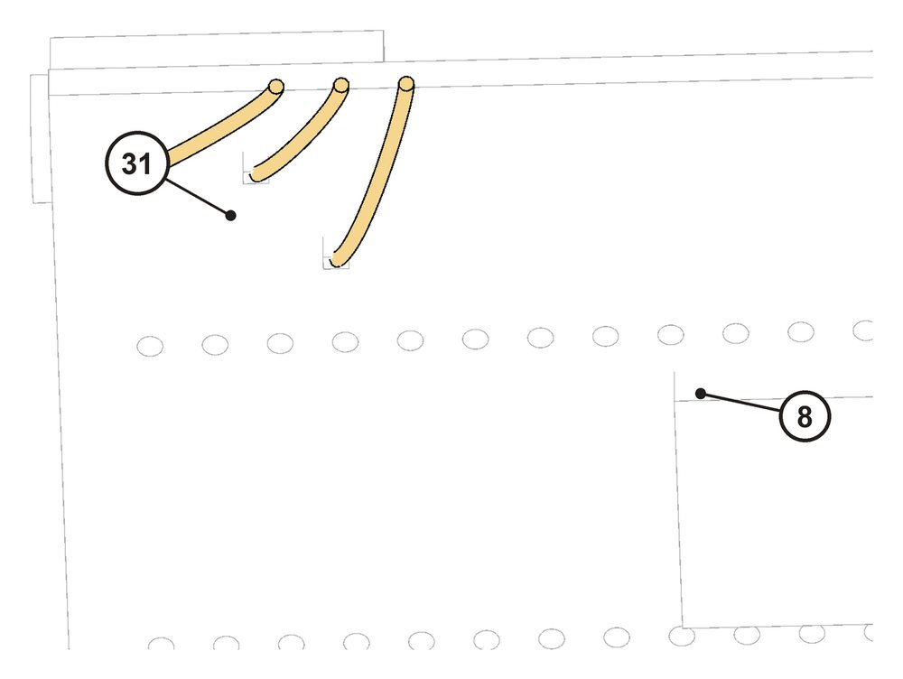
- em casa Antes de empilhar, solde três fios de ~40 mm (28–30 AWG, cores diferentes) nos terminais do jack da Audio Board, pelo lado de baixo: L, R e VGND.
- Teste: continuidade entre o fio VGND e qualquer pino GND da Audio Board: sem bipe. O terra do fone é virtual (~1,6 V); ligado ao GND, queima a saída de fone.

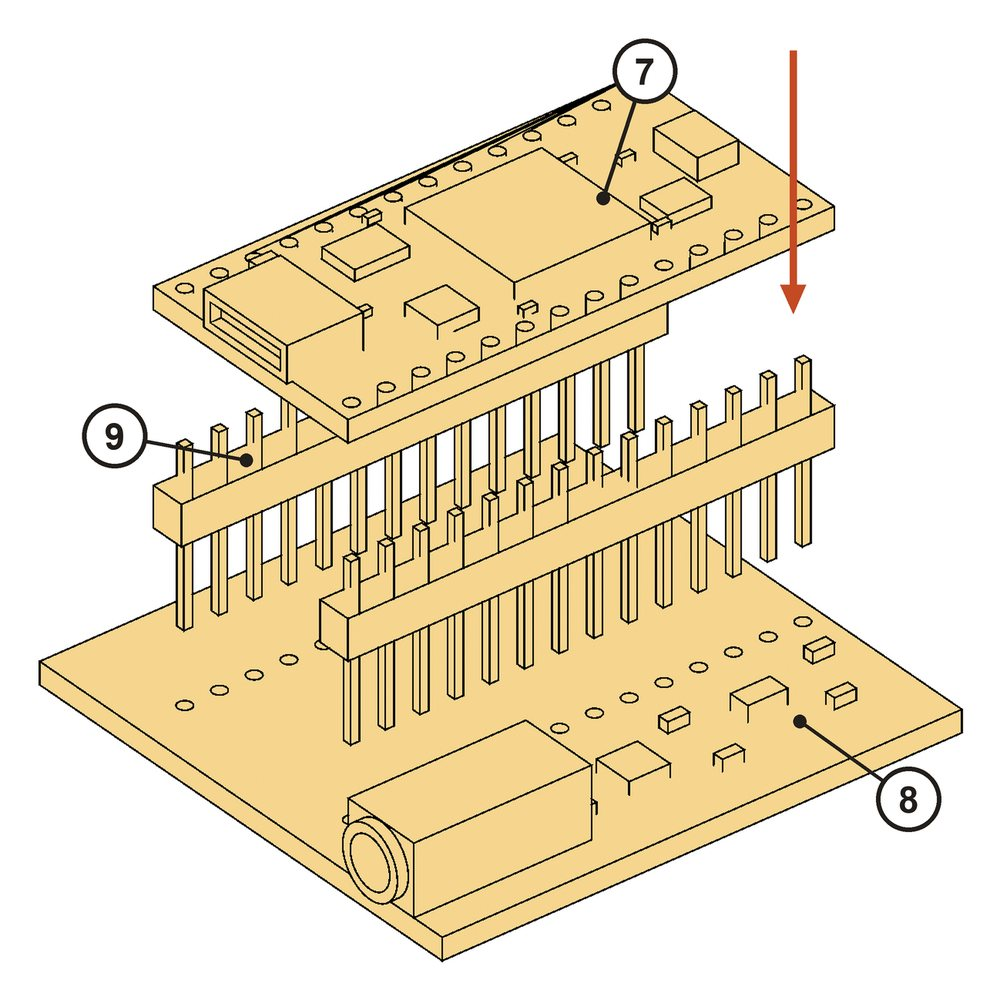

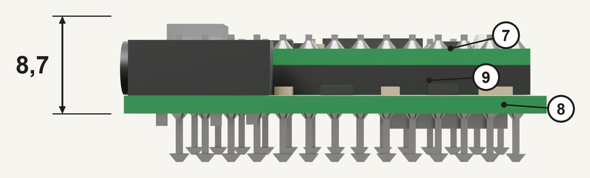
- em casa Passe as duas barras extralongas pela Audio Board, de baixo para cima; apoie o Teensy em cima, com o USB do mesmo lado do jack da Audio Board. O plástico das barras é o único espaçador.
- Solde os 28 pinos no Teensy e depois na Audio Board. As pernas compridas ficam para baixo: elas atravessam a placa principal no passo 4.
- Meça da face de baixo da Audio Board ao topo do conector USB: ≤ 8,7 mm (conferir). Anote. Se der mais, o plástico ficou alto: o case foi desenhado para 8,7.
4. Placa principal: conferir, soldar a pilha, testar sem bateria
4.1 Conferir a placa montada (sem ferro). Olhe o verso com lupa: os 28 sensores TMAG5253 no lugar, um sob cada switch, sem pontes de solda; U60 (carregador), U61 (conversor) com o indutor L10, U62 (amplificador), U51/U52 (multiplexadores), Q20/Q21/Q22, Q30/Q31 (luz de carga), D20/D30. Em cima: J_PNL (20) e J_CTL (21) soldados.

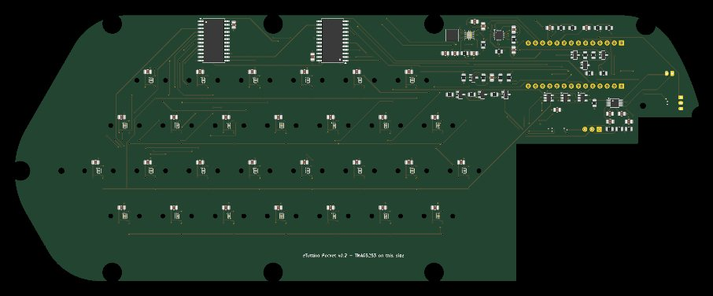

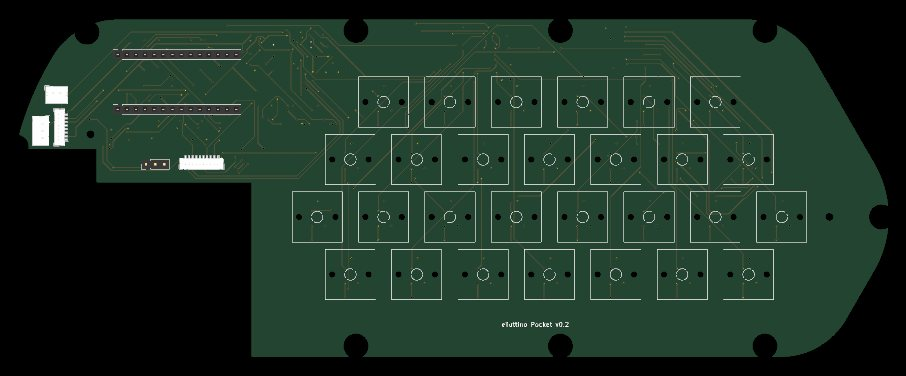
Resistências com a placa sem nada ligado (ponta preta no GND):
| Onde medir | Esperado | Se der errado |
|---|---|---|
| J_BAT pino 1 (BAT+) × pino 3 (GND) | > 100 kΩ | < 1 kΩ: curto no carregador ou em C62 |
| Furo do 3V3 da pilha (J2, 3º furo da fileira de trás) × furo GND | > 1 kΩ | < 50 Ω: curto no trilho de 3,3 V |
| Pad VBUS da plaquinha do painel (TP1) × GND (TP4) | > 50 kΩ | < 1 kΩ: curto no USB-C ou no ESD |

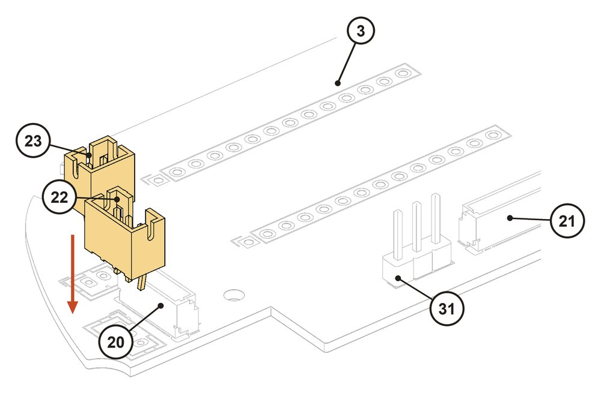
- em casa J_BAT (3 vias) e J_SPK (2 vias), com a trava como na serigrafia; solde pelo verso sem encostar o ferro nos vizinhos.
- em casa Encaixe as 28 pernas da pilha nos furos J1/J2, com o USB do Teensy para a esquerda (para o lado do painel). Ponha o calço de 3 mm (38: papelão ou uma tira impressa) entre a placa e a Audio Board, solde 2 pernas nas pontas, confira o paralelismo e solde as outras 26 pelo verso.
- Corte as pernas rente no verso (≤ 1 mm): o verso encosta nos pilares do fundo. Tire o calço.
- Fios do fone (31) nos pads J_HP, na frente da Audio Board: 1 = L, 2 = R, 3 = VGND (serigrafia). Torça os três juntos.

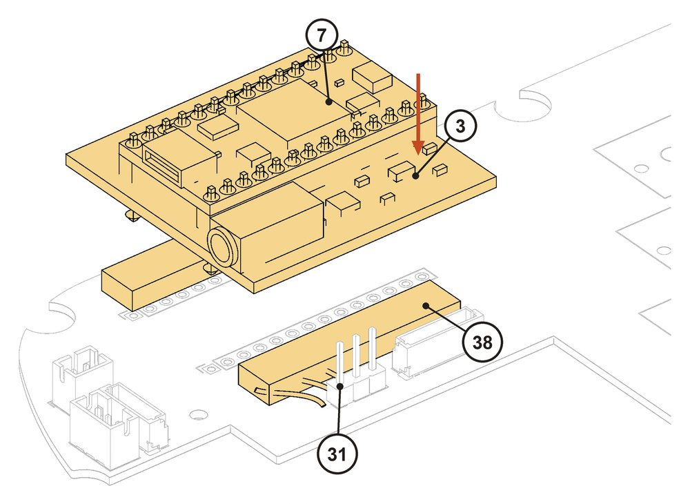
4.3 Primeiro teste com USB, sem bateria e sem firmware. Ligue a plaquinha do painel já soldada (passo 6) ao J_PNL e um cabo USB-C a um carregador. Sem a chave do volume, nada liga: este teste confere a USB e o carregador.
| Onde medir (ponta preta no GND) | Esperado |
|---|---|
| TP1 (VBUS) da plaquinha do painel | 4,75–5,25 V |
| J_BAT pino 1 (BAT+), sem bateria | 0–4,2 V oscilando (o carregador procura a bateria; normal) |
| 3V3 da pilha, chave aberta | 0 V |
A luz de carga pode piscar sem bateria: normal.
5. Plate e switches

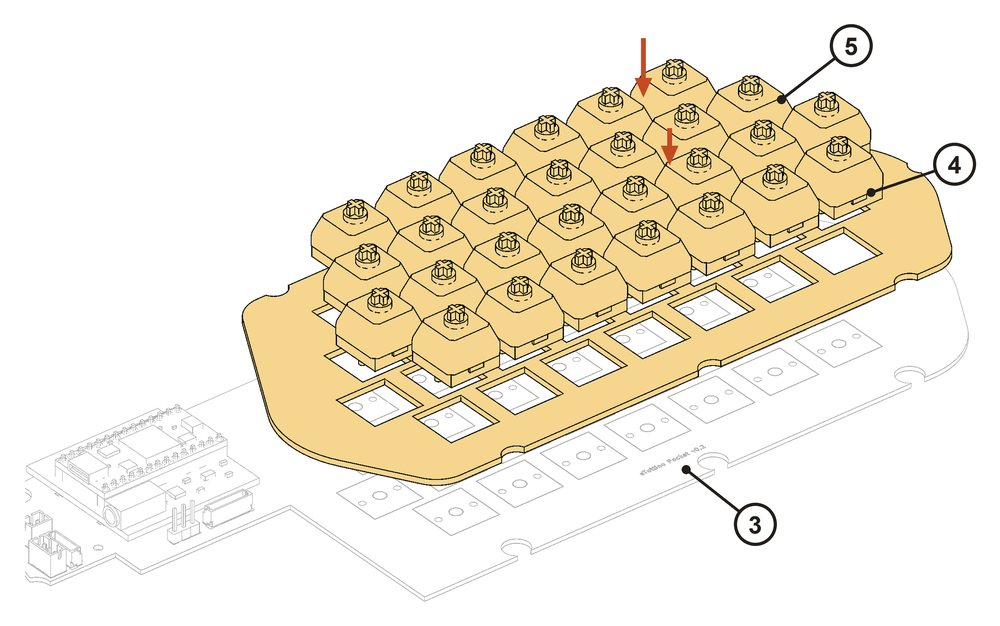
- Apoie o plate sobre a placa principal e encaixe os switches de cima, um a um, até o clique.
- Os Gateron magnéticos não têm pernas elétricas: o ímã fica com o norte para baixo e o sensor está no verso da placa, de propósito. Não inverta nada.
Passos 6 a 8
Plaquinhas, bateria e alto-falante, fechar o case
6. As plaquinhas, com os cabos soldados
6.1 Volume e knobs.

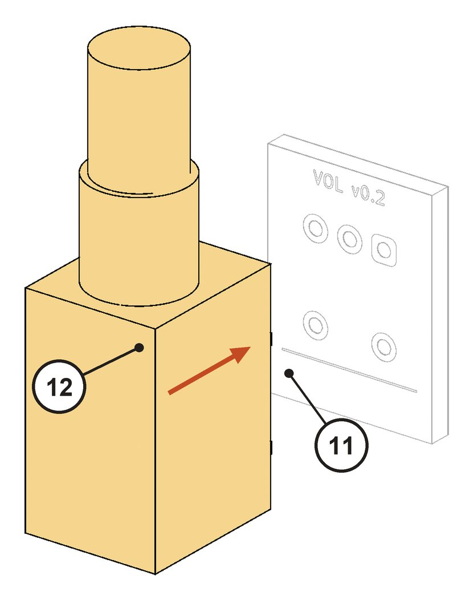

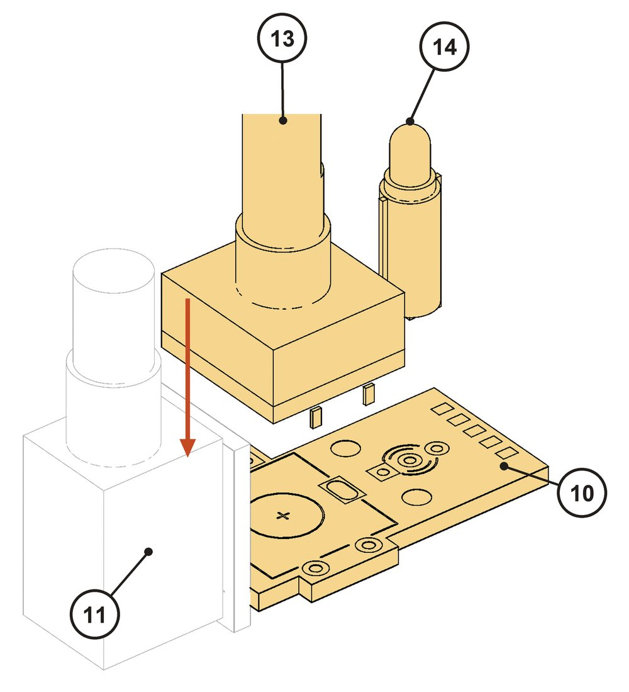
- em casa Potenciômetro (RK097) na plaquinha do volume: 5 pernas (3 do potenciômetro, 2 da chave) e as 2 abas da carcaça, eixo para cima.
- em casa Encoder EC11E na plaquinha dos knobs: 5 pernas e as 2 abas grandes; as pernas ocupam as duas "orelhas" da placa, atrás e na frente.
- em casa LED 3 mm no espaçador de ~10 mm: a perna comprida do meio é o catodo (GND), no furo do meio; vermelho e verde nos furos R e G. A ponta do LED precisa chegar ao furo da tampa: confira a altura com a casca antes de soldar.

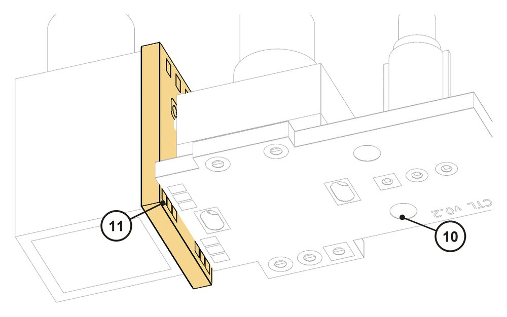
- em casa Encoste a plaquinha do volume na borda esquerda da dos knobs, por baixo, em esquadro, e solde os 6 pads JP de uma na outra (um é o GND; os outros dão firmeza).
- em casa Cabo dos knobs (21, JST SH 10 vias, conector só na ponta da placa principal): corte a ~100 mm, desencape 1,5 mm, estanhe e solde como no esquema abaixo.
- Teste: continuidade de cada pad ao pino do J_CTL; nenhum par vizinho em curto. O fio 1 é o do lado marcado do conector (triângulo): confira com o multímetro até o pad JW1.

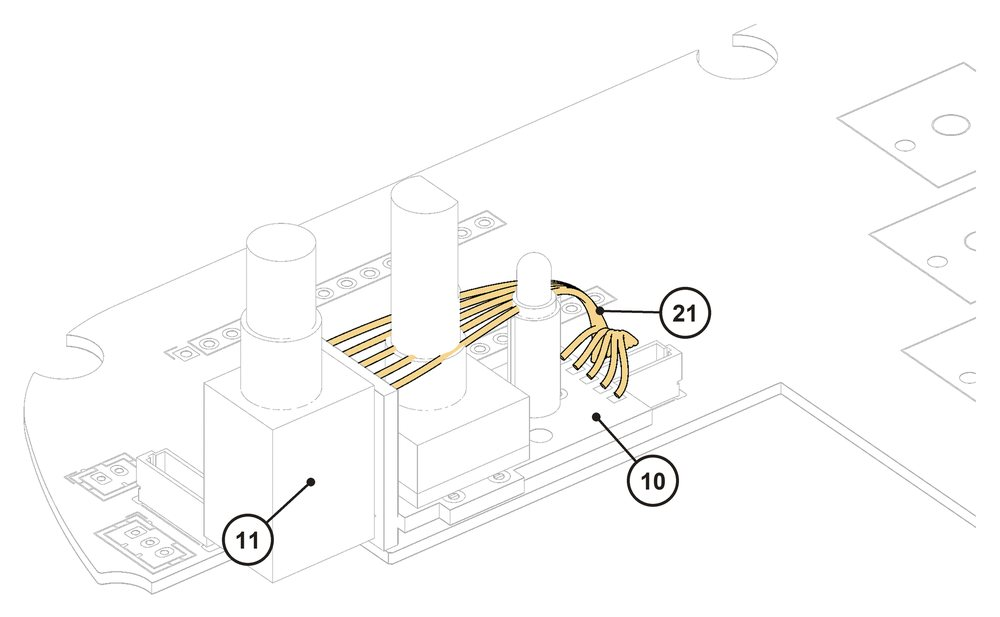
6.2 Painel.

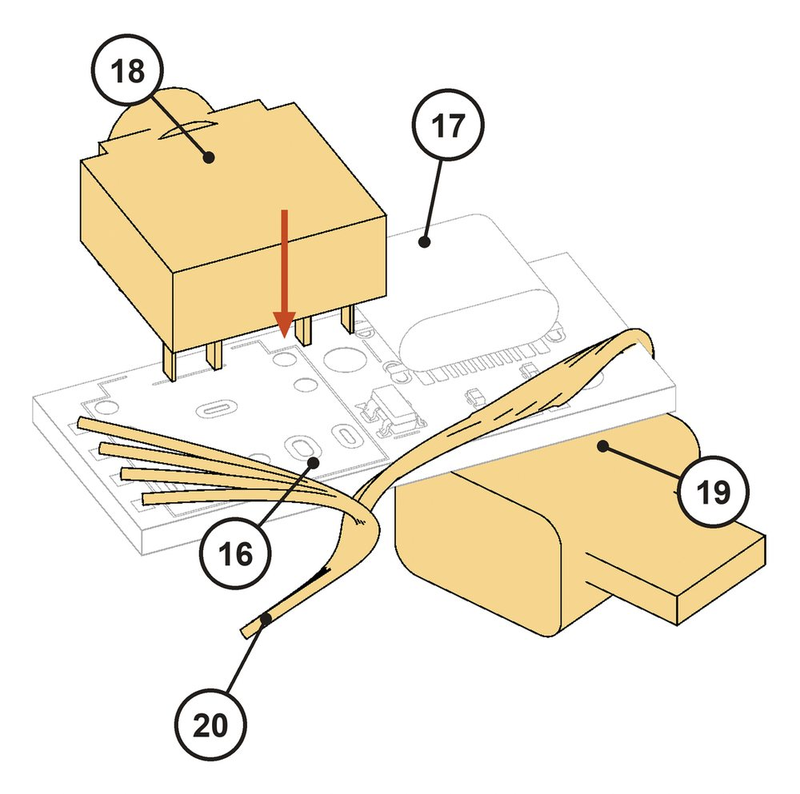

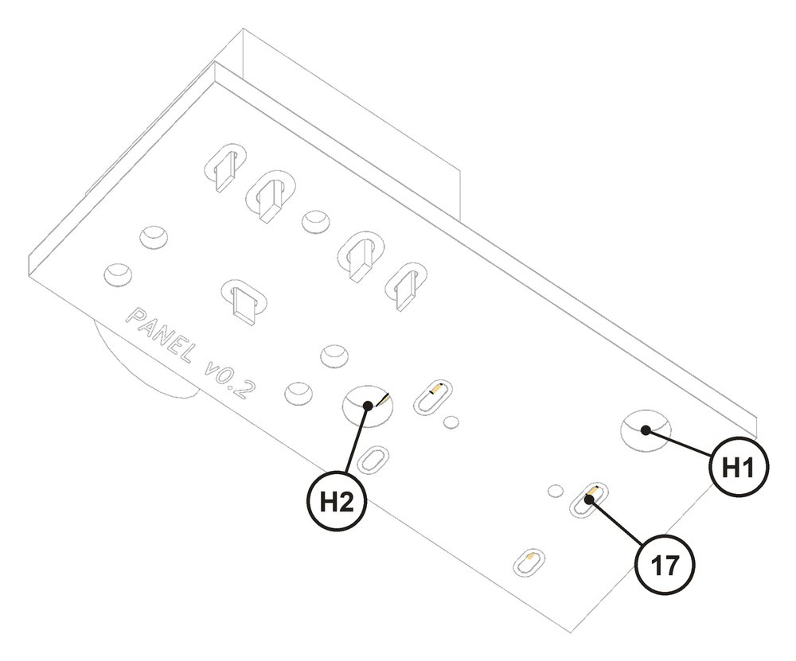
- em casa Jack SJ1-3525N por cima (5 pernas e 5 pinos): solde e corte as pernas a ≤ 1 mm.
- em casa A perna de trás-esquerda da carcaça do USB-C (a mais longe da parede, do lado oposto ao fone) fica sobre o plugue micro-B do Teensy, com 0,45 mm de folga: corte rente ao verso com o alicate e lixe. As outras três podem ficar (≤ 1 mm).
- em casa Cabo micro-B de 90°: corte a ~40 mm do plugue (conferir com o case), desencape e solde os 4 fios na fileira de trás: TP1 VBUS, TP2 D+, TP3 D−, TP4 GND. Torça D+ com D−. Confira as cores com o multímetro (VBUS e GND são os pinos 1 e 5 do micro-B).
- em casa Cabo do painel (20, JST SH 8 vias, conector na ponta da placa principal): corte a ~100 mm e solde como no esquema abaixo.
Testes da plaquinha do painel, sem nada ligado:
| Onde medir | Esperado |
|---|---|
| Manga do jack (TP7, HP_VGND) × TP4 (GND) | aberto (sem bipe). Bipe = erro grave: o fone não pode ir ao GND |
| Ponta do jack (TP5) × TP8 (comutação), sem plugue | bipe (o contato fecha sem plugue) |
| O mesmo, com um plugue de fone encaixado | aberto |
| TP1 (VBUS) × TP4 (GND) | > 50 kΩ |
7. Bateria e alto-falante
7.1 Alto-falante. A casca de cima fica de cabeça para baixo sobre um pano.

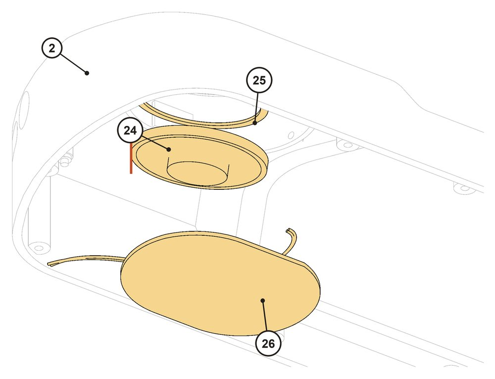
- Cole a junta de espuma (25) no anel, sob a grade; apoie o alto-falante (24) nela, com o cone para a grade.
- Passe os dois fios pelo furo da parede da caixa e vede o furo com cola: a caixa tem de ficar fechada.
- Cole o fundo da caixa (26) sob as paredes, em volta toda, sem frestas.
- Na ponta dos fios, o plugue JST PH 2 vias: vermelho no pino 1 (SPK+), preto no 2.
- Teste: resistência entre os dois fios: ~8 Ω (7–9). Aberto = fio partido.
7.2 Bateria. Releia os avisos da LiPo. A bateria entra pela tampinha, com o case já fechado (passo 8); antes, confira as pontas.
- No plugue da bateria, com o multímetro: vermelho (+) × preto (−) = 3,0–4,2 V; NTC × preto = ~10 kΩ a 25 °C (8–12 kΩ).
- Com o rabicho (28) já no J_BAT e sem a bateria: continuidade de cada pino da ponta do rabicho ao J_BAT: 1 = BAT+, 2 = NTC, 3 = GND.
- Compare as duas pontas: o vermelho da bateria precisa cair no pino que vai ao J_BAT 1, o NTC no 2, o preto no 3. Se não, troque os terminais na carcaça do rabicho (levante a lingueta com uma agulha), nunca os da bateria.
8. Fechar o case

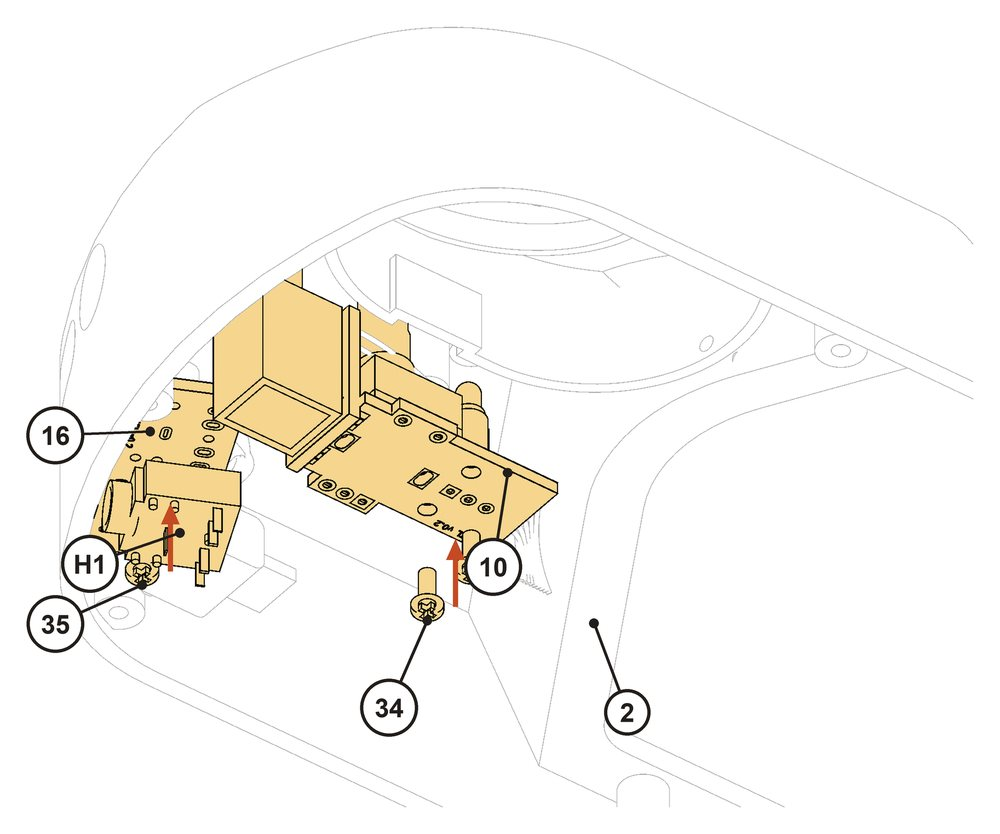
- Passe o eixo do potenciômetro pelo furo de Ø 7,3 da tampa e aperte a porca M7 (37) por fora, sem forçar; o pino anti-giro entra no furinho ao lado (ou corte o pino).
- Apoie a plaquinha dos knobs nos dois postes e aperte os 2 parafusos M2 × 5 (34). O eixo do encoder e o LED saem pelos furos da tampa.
- Encaixe a plaquinha do painel: o USB-C e o fone nas duas janelas da parede curva, a borda da frente apoiada na aba, o pino do poste no furo H1 e o parafuso M2 × 6 (35) no H2. Nada vai embaixo dela: ela passa 0,45 mm acima do plugue do Teensy.

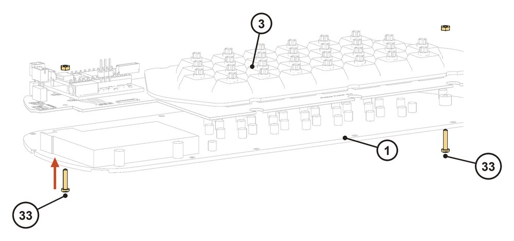
- Apoie a placa principal nos pilares do fundo e prenda com os 2 parafusos M2 × 10 de baixo para cima, porcas por cima (33).
- Ligue os cabos, com a casca ao lado: cabo do painel no J_PNL, cabo dos knobs no J_CTL (até a trava estalar), plugue micro-B no Teensy, alto-falante no J_SPK. O rabicho da bateria vai do J_BAT pelo rasgo até o bolso, ao lado do berço.
- Antes de fechar: nenhum fio preso entre o fundo e os pilares nem sobre o verso da placa.

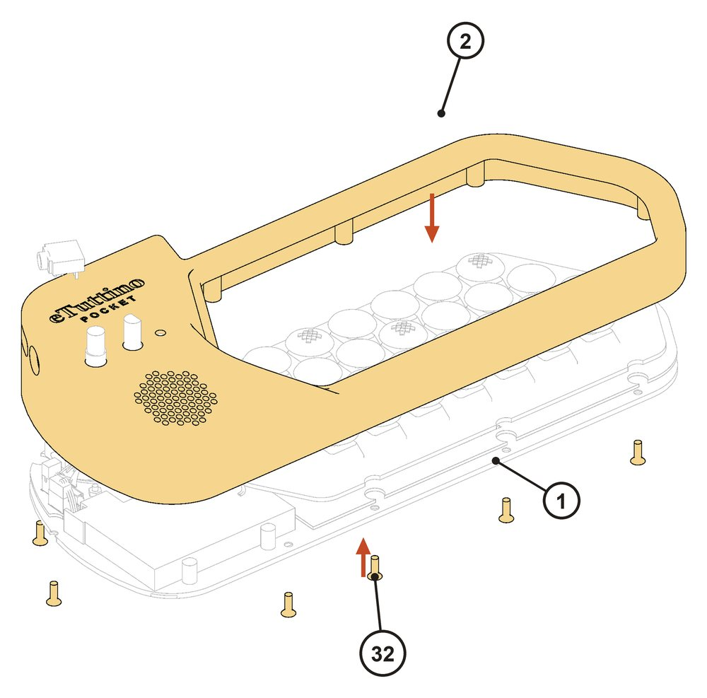
- Desça a casca sobre o fundo, sem prender cabos, e aperte os 10 parafusos M2,5 × 8 (32) por baixo, sem forçar.

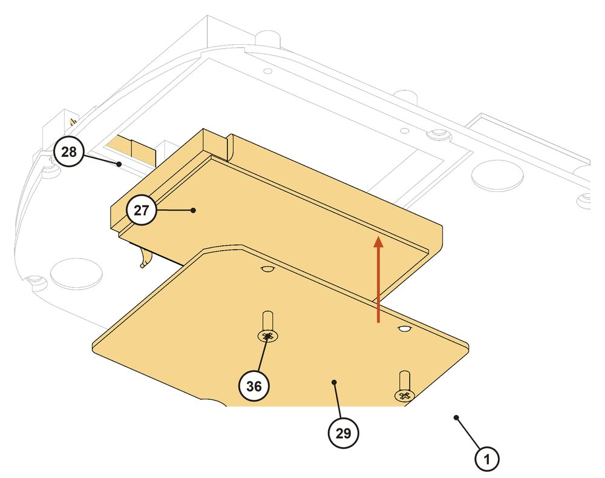
- Com a polaridade conferida (7.2), encaixe o plugue da bateria no rabicho e deite o par no bolso. Ponha a bateria no berço sobre a espuma, sem cola, com o PCM (a plaquinha dela) do lado do bolso.
- Meça J_BAT 1 × 3 = a tensão da bateria (3,0–4,2 V). Feche a tampinha com os 2 parafusos M2 × 6 escareados (36).

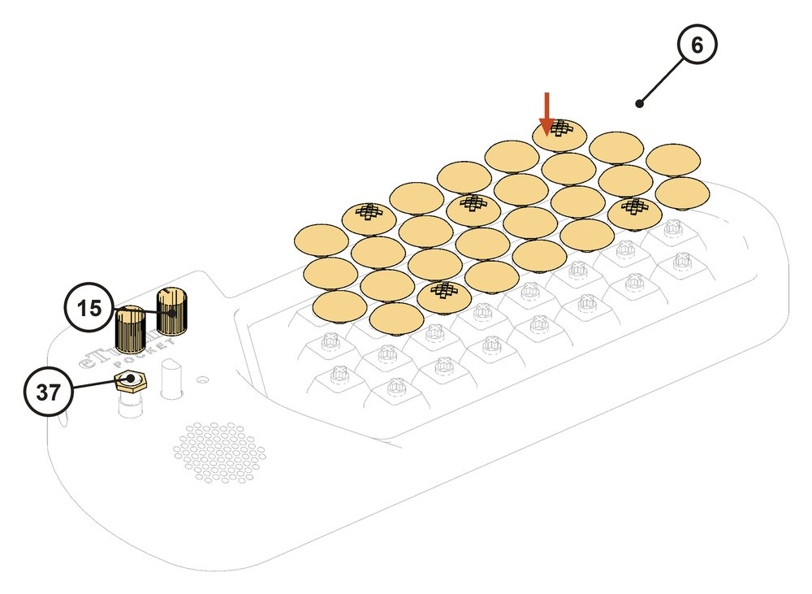
Passo 9
Primeiros testes, sem a firmware do Pocket
O Teensy ainda tem o programa de fábrica (pisca o LED laranja dele) ou nenhum. Sem a firmware do Pocket o pino KEEP não sobe, então ligado só pela bateria ele se desliga sozinho em meio segundo (teste 5). Os pontos de teste, com o case aberto:

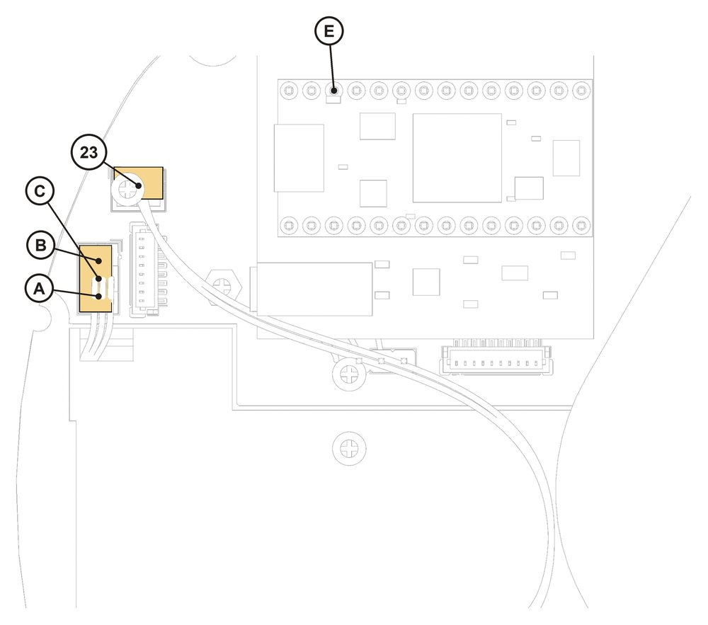

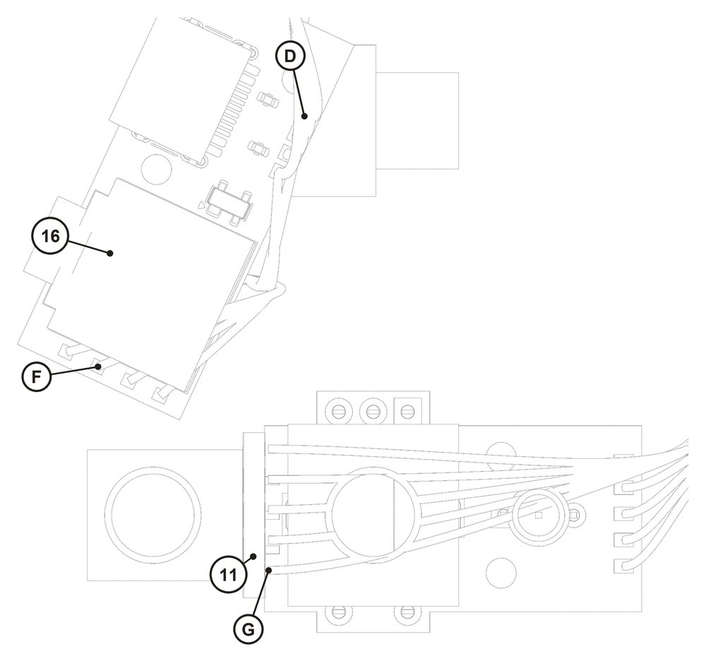
| Ponto | Onde | Valor |
|---|---|---|
| A · GND | J_BAT pino 3 (também TP4 do painel, pino G do Teensy) | referência |
| B · BAT+ | J_BAT pino 1 | 3,0–4,2 V com bateria |
| C · NTC | J_BAT pino 2 | ~10 kΩ ao GND sem energia; ~0,75 V com USB (25 °C) |
| D · VBUS | TP1 da plaquinha do painel | 4,75–5,25 V com USB |
| E · 3,3 V | pino 3V do Teensy (por cima) | 3,25–3,35 V ligado; 0 V desligado |
| F · terra do fone | TP7 / manga do jack | nunca em continuidade com o GND |
| G · VSYS | pad JW4 da plaquinha do volume | ~4,4 V com USB; = bateria sem USB |
| H · alto-falante | entre os dois fios dele | ~8 Ω |
| # | Teste | Como | Esperado |
|---|---|---|---|
| 1 | Luz de carga, Pocket desligado | volume todo para a esquerda (clique = desligado), bateria encaixada, USB-C num carregador | vermelho aceso enquanto carrega; apaga com a bateria cheia (~2,5 h) |
| 2 | Luz de carga, Pocket ligado | com a USB ligada, gire o volume além do clique | a luz de carga apaga. Com o programa de fábrica do Teensy o vermelho pisca junto com o LED laranja dele: normal |
| 3 | 3,3 V presente | ligado e com USB: E × A | 3,25–3,35 V |
| 4 | Liga/desliga pelo volume | com USB, gire o volume até o clique | E cai a 0 V em menos de 1 s |
| 5 | Só com a bateria | sem USB, gire o volume além do clique | o 3,3 V aparece por ~0,5 s e cai: normal sem a firmware do Pocket |
| 6 | Tensão da bateria | B × A | 3,0–4,2 V |
| 7 | Fone sem GND | desligado; continuidade entre a manga de um plugue no jack e A | aberto |
| 8 | Carga | depois de 10–20 min carregando, encoste o dedo na tampinha | no máximo morna. Quente: tire a USB e confira o NTC (C) |
Teste 3 com ~4,4 V ou 5 V no 3V do Teensy: desligue já e confira o corte da ponte VUSB–VIN (passo 3). Teste 3 com 0 V: confira o cabo dos knobs (fios 4 e 5 = chave) e a chave do potenciômetro.

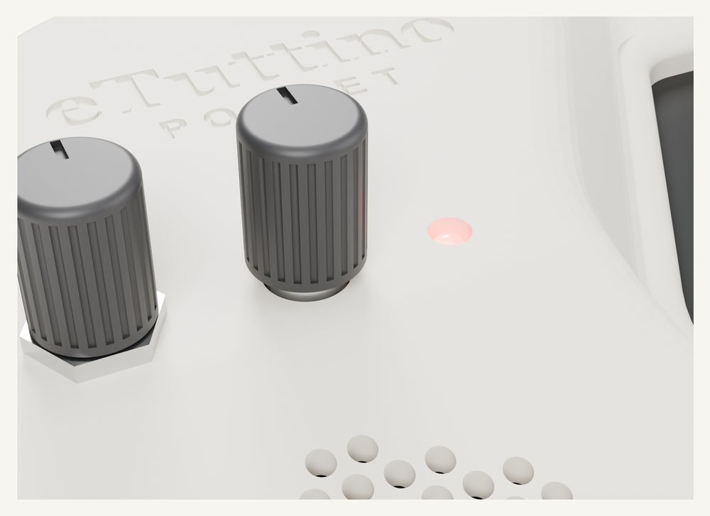

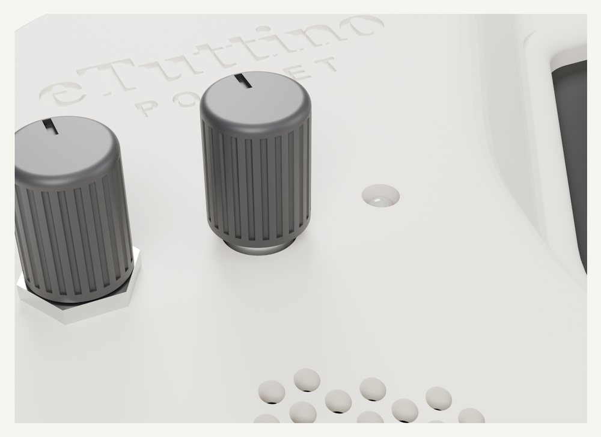
Gravar a firmware e calibrar as teclas em breve
A firmware do Pocket ainda não existe. Quando existir, esta seção vai explicar como gravá-la pela USB-C (com o volume ligado e o cabo no computador, o Pocket fica ligado durante a gravação) e como calibrar as 28 teclas. Até lá, o Pocket não toca: os testes acima conferem só a parte elétrica.